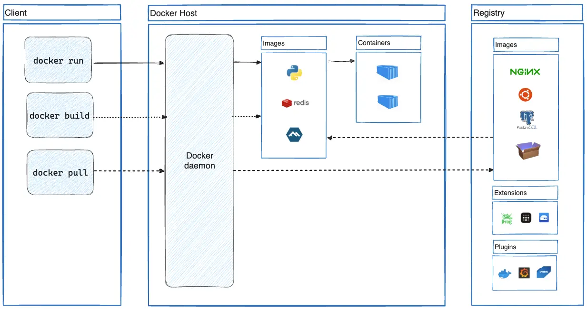
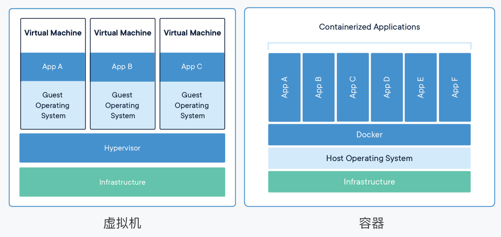
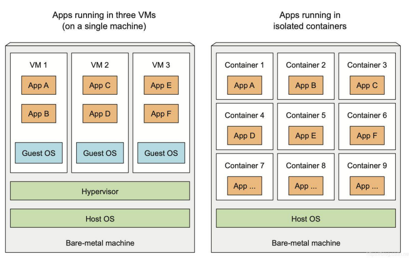

容器是什么
简单来说，容器就是个小工具，可以把你想跑的程序，库文件，配置文件都一起“打包”。然后，我们在任何一个计算机的节点上，都可以使用这个打好的包。有了容器，一个命令就能把你想跑的程序跑起来，做到了一次打包，就可以到处使用。 比如我们可以把整套 zabbix 环境（httpd+php+mysql+zabbix-server） 一起打包，然后给它搬到其它机器上直接运行。
容器类似于虚拟化，但和虚拟化有本质区别。 虚拟化会使用虚拟机监控程序模拟硬件，从而使多个操作系统能够并行运行。但这不如容器轻便。相较于虚拟机，Linux 容器在运行时所占用的资源更少，使用的是标准接口（启动、停止、环境变量等），并会与应用隔离开。
Docker 的诞生
现在我们都已经对Container、Kubernetes这些技术名词耳熟能详了，但你知道这一切的开端——Docker，第一次在世界上的亮相是什么样子的吗？
2013年3月15日，在北美的圣克拉拉市召开了一场Python开发者社区的主题会议PyCon，研究和探讨各种Python开发技术和应用，与我们常说的“云”“PaaS”“SaaS”根本毫不相关。
在当天的会议日程快结束时，有一个“闪电演讲”（lighting talk）的小环节。其中有一位开发者，用了5分钟的时间，做了题为 “The future of Linux Containers” 的演讲，不过临近末尾因为超时而被主持人赶下了台，场面略显尴尬（你可以在 这里 回看这段具有历史意义的视频）。
相信你一定猜到了，这个只有短短5分钟的技术演示，就是我们目前所看到的、席卷整个业界的云原生大潮的开端。正是在这段演讲里，Solomon Hykes（dotCloud公司，也就是Docker公司的创始人）首次向全世界展示了Docker技术。
5分钟的时间非常短，但演讲里却包含了几个现在已经普及，但当时却非常新奇的概念，比如容器、镜像、隔离运行进程等，信息量非常大。
PyCon2013大会之后，许多人都意识到了容器的价值和重要性，发现它能够解决困扰了云厂商多年的打包、部署、管理、运维等问题，Docker也就迅速流行起来，成为了GitHub上的明星项目。然后在几个月的时间里，Docker更是吸引了Amazon、Google、Red Hat等大公司的关注，这些公司利用自身的技术背景，纷纷在容器概念上大做文章，最终成就了我们今天所看到的至尊王者Kubernetes的出现。
Docker的形态
目前使用Docker基本上有两个选择： Docker Desktop 和 Docker Engine。
Docker Desktop是专门针对个人使用而设计的，支持Mac和Windows快速安装，具有直观的图形界面，还集成了许多周边工具，方便易用。
不过，我个人不是太推荐使用Docker Desktop，原因有两个。第一个，它是商业产品，难免会带有Docker公司的“私人气息”，有一些自己的、非通用的东西，不利于我们后续的Kubernetes学习。第二个，它只是对个人学习免费，受条款限制不能商用，我们在日常工作中难免会“踩到雷区”。
Docker Engine则和Docker Desktop正好相反，完全免费，但只能在Linux上运行，只能使用命令行操作，缺乏辅助工具，需要我们自己动手DIY运行环境。不过要是较起真来，它才是Docker当初的真正形态，“血脉”最纯正，也是现在各个公司在生产环境中实际使用的Docker产品，毕竟机房里99%的服务器跑的都是Linux。
所以，在接下来的学习过程里，我推荐使用Docker Engine。
计算机领域中的容器：
- docker
- containerd，有替换 docker 的趋势，目前来说还主要是 docker
- gvisor
- podman
容器的优势：
Build -> Share -> Run 一次构建，共享后可以到处运行
镜像->镜像仓库->容器
技术的演进
- 1979年，Unix v7 系统支持 chroot，为应用构建一个独立的虚拟文件系统环境。
- 1999年，FreeBSD 4.0 支持 jail，是第一个商用化的 OS 虚拟化技术。
- 2002年，Linux Namespaces 进程隔离
- 2004年，Solaris 10支持 Solaris Zone，第二个商用化的 OS 虚拟化技术。快照，克隆
- 2004年 ~ 2007年，Google 内部大规模使用Cgroups等OS虚拟化技术。
- 2006年，Google开源内部使用的 Google Process Container 技术，后续更名为cgroup。资源隔离（CPU、内存、IO、网络）
- 2007年，Linux Control Group。Process Containers 重命名并合并到 Kernel 2.6.24
- 2008年，Cgroups进入了Linux内核主线。
- 2008年，LXC（Linux Container）项目具备了Linux容器的雏型。使用 namespace 和 cgroups 实现的第一个容器管理
- 2013年，Docker项目正式发布，让Linux容器技术逐步席卷天下。
- 2014年，Kubernetes项目正式发布，容器技术开始和编排系统起头并进。
- 2015年，由Google，Redhat、Microsoft及一些大型云厂商共同创立了CNCF(Cloud Native Computing Foundation)。
- 2016年-2017年，容器生态开始模块化、规范化，CNCF接受Containerd、rkt项目，OCI发布1.0，CRI/CNI得到广泛支持。
- 2017年-2018年，容器服务商业化，AWS、Google云、阿里云、华为云、VMware，Redhat和Rancher等公司开始提供基于 Kubernetes的商业服务产品。
- 2019年-2021年，容器引擎技术飞速发展，新技术不断涌现，CNCF日益庞大。
- 截止2022年，CNCF聚集的贡献者超过17万、有130+项目、涉及全球187个国家。
Docker的架构
下面的这张图来自Docker官网（ https://docs.docker.com/get-started/overview/ ）Engine的内部角色和工作流程，对我们的学习研究非常有指导意义。

Docker 实际上是一个客户端 client ，它会与 Docker Engine 里的后台服务 Docker daemon 通信，而镜像则存储在远端的仓库 Registry 里，客户端并不能直接访问镜像仓库。
Docker client 可以通过 build、 pull、 run 等命令向 Docker daemon 发送请求，而 Docker daemon 则是容器和镜像的“大管家”，负责从远端拉取镜像、在本地存储镜像，还有从镜像生成容器、管理容器等所有功能。
所以，在 Docker Engine 里，真正干活的其实是默默运行在后台的 Docker daemon，而我们实际操作的命令行工具 docker 只是个传声筒的角色。
Docker 的组成：
https://docs.docker.com/engine/docker-overview/
- Docker 主机(Host)：一个物理机或虚拟机，用于运行 Docker服务进程和容器。
- Docker 服务端(Server)：Docker 守护进程，运行 docker 容器。
- Docker 客户端(Client)：客户端使用 docker 命令或其他工具调用 docker API。
- Docker 仓库(Registry)：保存镜像的仓库，类似于 git 或 svn 这样的版本控制系
- Docker 镜像(Images)：镜像可以理解为创建实例使用的模板。
- Docker 容器(Container)：容器是从镜像生成对外提供服务的一个或一组服务
官方仓库: https://hub.docker.com/
容器对比虚拟机：
其实容器和虚拟机面对的都是相同的问题，使用的也都是虚拟化技术，只是所在的层次不同，我们可以参考Docker官网上的两张图，把这两者对比起来会更利于学习理解。

（Docker官网的 图示 其实并不太准确，容器并不直接运行在Docker上，Docker只是辅助建立隔离环境，让容器基于Linux操作系统运行）
首先，容器和虚拟机的目的都是隔离资源，保证系统安全，然后是尽量提高资源的利用率。
从实现的角度来看，虚拟机虚拟化出来的是硬件，需要在上面再安装一个操作系统后才能够运行应用程序，而硬件虚拟化和操作系统都比较“重”，会消耗大量的CPU、内存、硬盘等系统资源，但这些消耗其实并没有带来什么价值，属于“重复劳动”和“无用功”，不过好处就是隔离程度非常高，每个虚拟机之间可以做到完全无干扰。
容器（即图中的Docker），它直接利用了下层的计算机硬件和操作系统，因为比虚拟机少了一层，所以自然就会节约CPU和内存，显得非常轻量级，能够更高效地利用硬件资源。不过，因为多个容器共用操作系统内核，应用程序的隔离程度就没有虚拟机那么高了。
运行效率，可以说是容器相比于虚拟机最大的优势，在这个对比图中就可以看到，同样的系统资源，虚拟机只能跑3个应用，其他的资源都用来支持虚拟机运行了，而容器则能够把这部分资源释放出来，同时运行6个应用。

容器不是虚拟机
补充资料
Gain Access to the MobyLinux VM on Windows or MacOS
容器的优缺点:
-
优点：
- 快速部署：短时间内可以部署成百上千个应用，更快速交付到线上。
- 高效虚拟化：不需要额外的hypervisor支持，直接基于linux 实现应用虚拟化，相比虚拟机大幅提高性能和效率。
- 节省开支：提高服务器利用率，降低IT支出。
- 简化配置：将运行环境打包保存至容器，使用时直接启动即可。
- 快速迁移和扩展：可夸平台运行在物理机、虚拟机、公有云等环境，良好的兼容性可以方便将应用从A宿主机迁移 到B宿主机，甚至是A平台迁移到B平台。
-
缺点：
- 隔离性
- 安全性